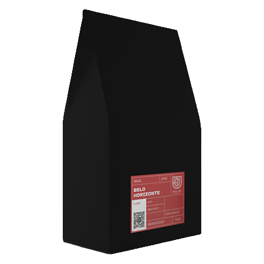
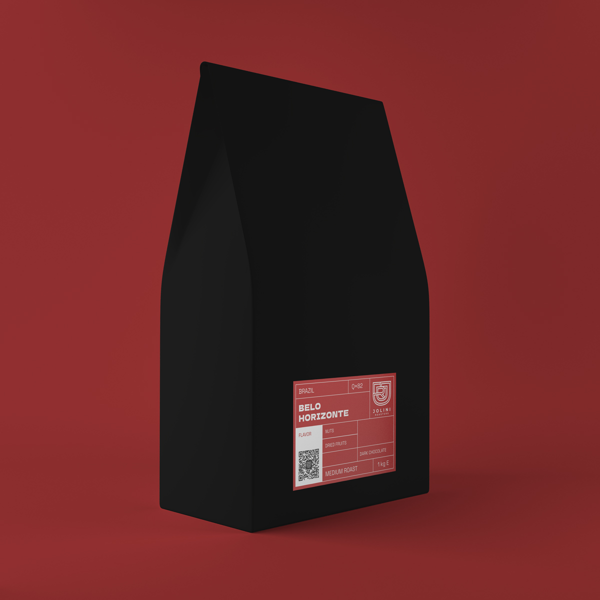
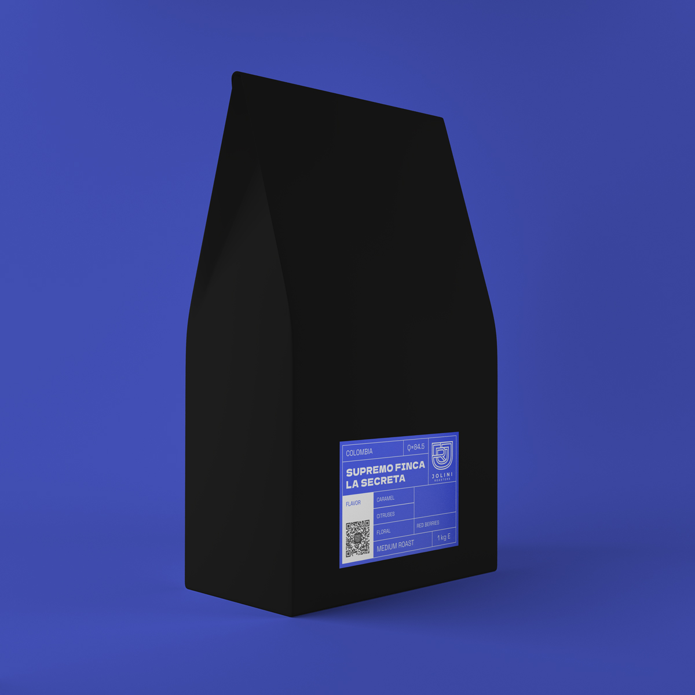
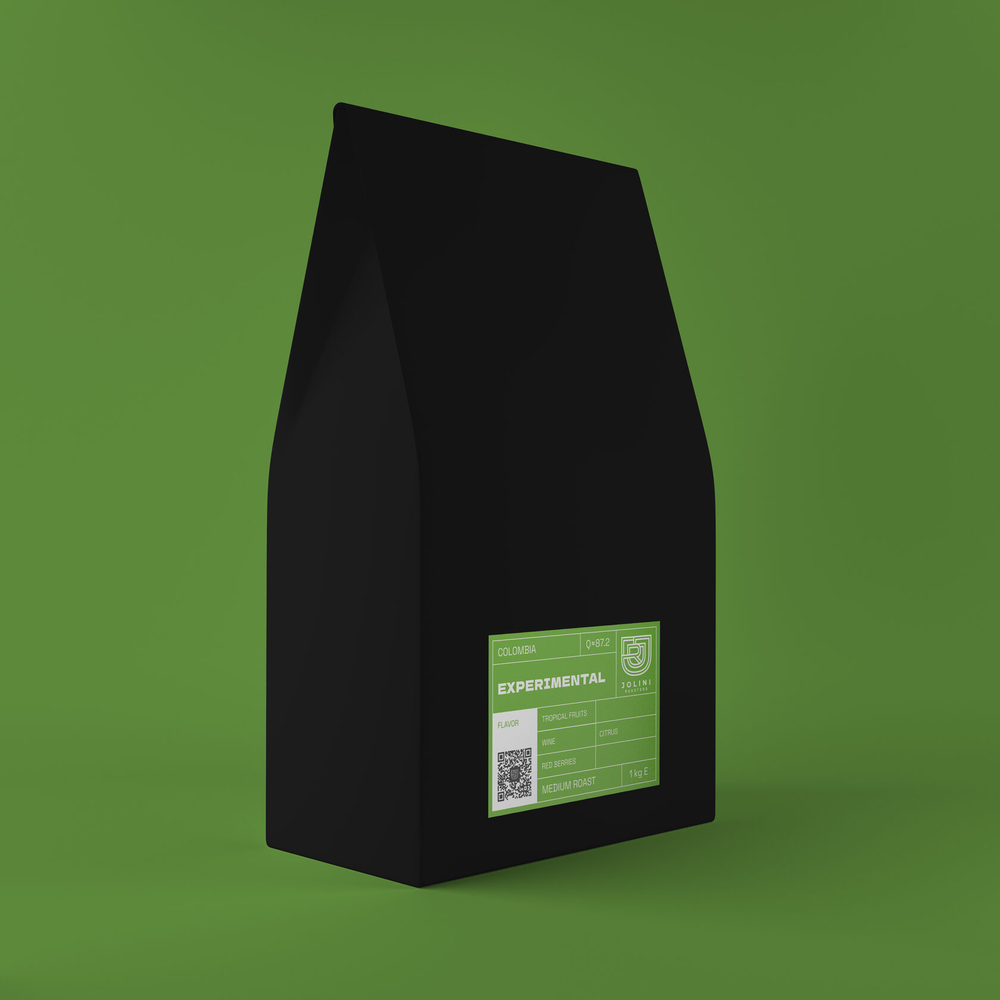
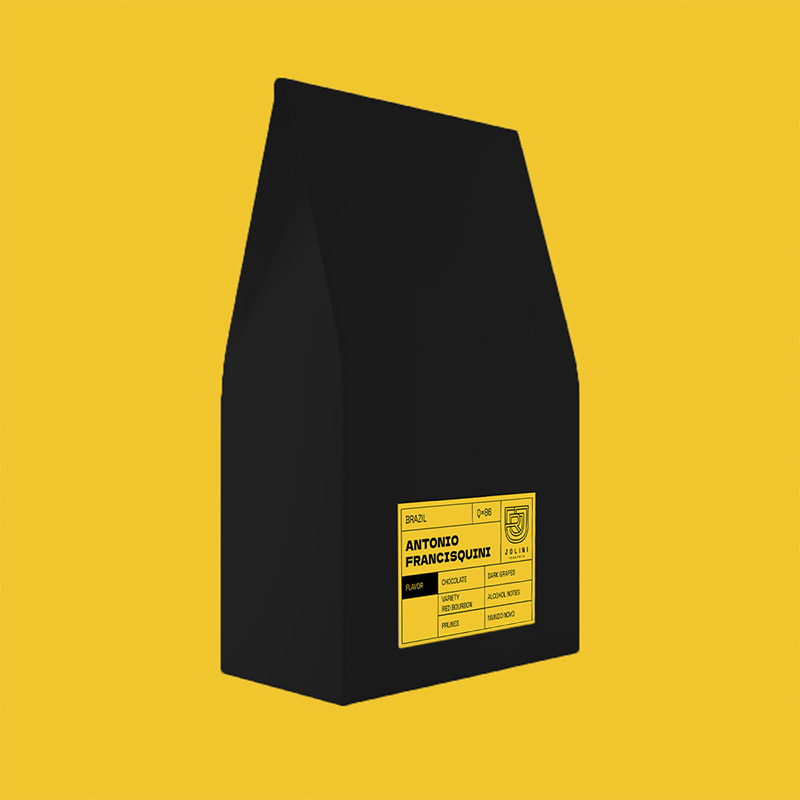
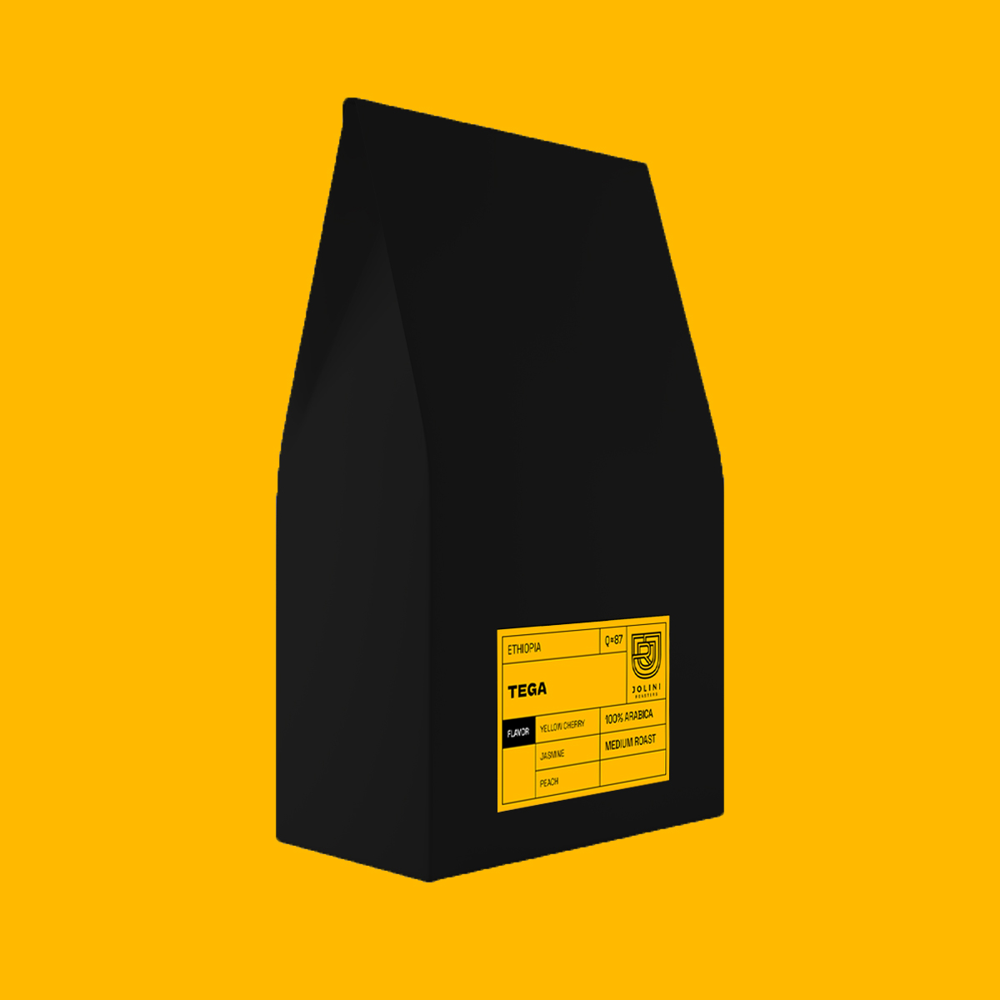
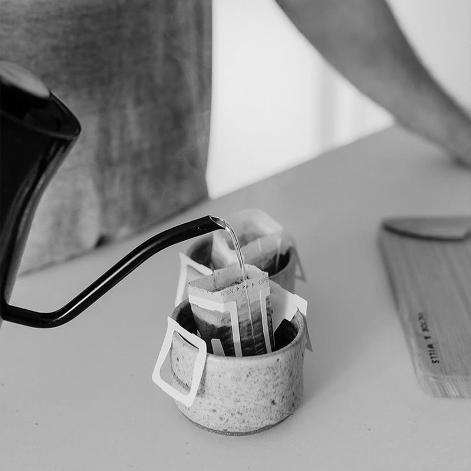
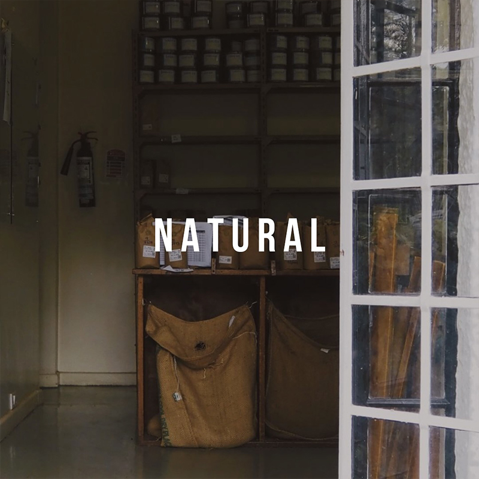
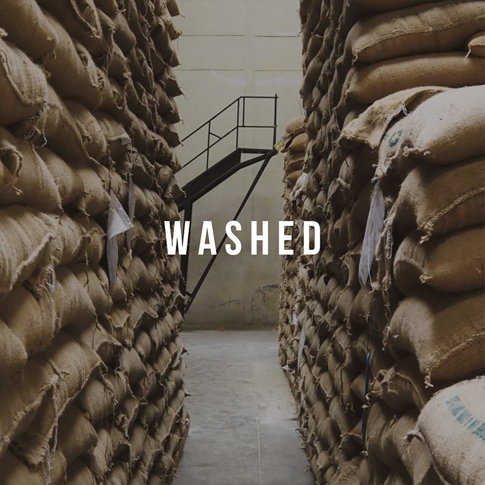
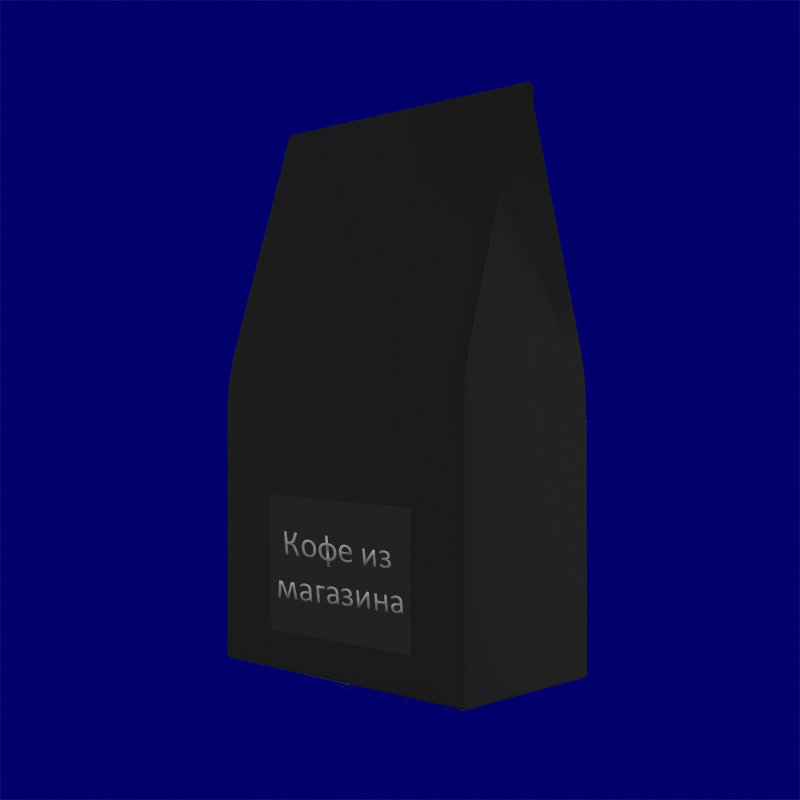

Создаем эспрессо идеального дня с
Jolini Roasters "Jolini Roasters" - это современное предприятие, занимающееся производством высококачественного кофе. Наше производство начинается с тщательного отбора лучших зерен кофе и заканчивается упаковкой готового продукта.
Jolini Roasters "Jolini Roasters" - это современное предприятие, занимающееся производством высококачественного кофе. Наше производство начинается с тщательного отбора лучших зерен кофе и заканчивается упаковкой готового продукта.
Кофейный сорт Belo Horizonte
Погрузитесь в атмосферу бразильской страсти и утонченности с нашим кофе "Belo Horizonte". Наши зерна тщательно отобраны с кофейных плантаций региона Белу-Оризонти, где солнечный климат и плодородные почвы создают идеальные условия для выращивания зерен высочайшего качества.
Насладитесь уникальным букетом ароматов и богатым вкусом с нотками фруктов, шоколада и орехов. Каждая чашка нашего кофе "Belo Horizonte" - это путешествие в самое сердце Бразилии.
Откройте для себя истинное удовольствие в каждом глотке и обретите новый взгляд на кофейную культуру с нашим кофе "Belo Horizonte".

Наши сорта кофе
Скоро...

Belo Horizonte
Рейтинг Q-грейдера составляет 82.
Обработка: натуральная.
Регион: Серраду Минейру.
Сорт: Жёлтый Катуай, Мундо Ново.
Состав: сушёные фрукты, тёмный шоколад, орехи.
Регион: Серраду Минейру.
Сорт: Жёлтый Катуай, Мундо Ново.
Состав: сушёные фрукты, тёмный шоколад, орехи.

Supremo Finca La Secreta
Рейтинг Q-грейдера составляет от 84.25 до 84.75. Обработка: мойка.
Регион: Антиокия. Сорт: Катурра, Колумбия. Вкусовые характеристики: красные ягоды, цитрусы, цветочные нотки, карамель.
Регион: Антиокия. Сорт: Катурра, Колумбия. Вкусовые характеристики: красные ягоды, цитрусы, цветочные нотки, карамель.

Colombia Experimental
Рейтинг Q-грейдера составляет от 87 до 87.5. Обработка: анаэробная,
натуральная.
Регион: Антиокия. Сорт: Кастильо, Катурра, Колумбия. Вкусовые характеристики: тропические фрукты, вино, красные ягоды, цитрусовые.
Регион: Антиокия. Сорт: Кастильо, Катурра, Колумбия. Вкусовые характеристики: тропические фрукты, вино, красные ягоды, цитрусовые.

Antonio Francisquini
Рейтинг Q-грейдера составляет 84.25. Обработка: анаэробная,
натуральная. Регион: Сarmo de Minas, Minas Gerais. Натуральная обработка. Во вкусе:
желтые фрукты, миндаль, курага. Обжарено под фильтр.

Tega
Рейтинг Q-грейдера составляет 86.5. Обработка: анаэробная,
натуральная. Регион: Антиокия. Сорт: Кастильо, Катурра, Колумбия.
Вкусовые характеристики: персик, сушеный инжир, молочный шоколад, бисквит
Belo Horizonte
Состав: карамель, молочный шоколад, какаоСтрана: Бразилия
Регион: Суль де Минас
Тип обработки: Натуральный
Примерно 40% мирового кофейного производства приходится на Бразилию, что составляет примерно 3,7 млн. тонн в год. Неудивительно, что при таком большом количестве производимого кофе страна предлагает широкий спектр сортов. В последние годы бразильские производители начали больше инвестировать в производство спешелти кофе. На сегодняшний день основными кофейными регионами Бразилии являются Эспириту-Санту, Сан-Паулу, Минас-Жерайс и Баия.



Сравнение магазинного и молотого кофе

Кофе из магазина
- - Смесь различных сортов, качество может варьироваться
- - Может быть менее выразительным из-за индустриальной обработки
- - Ограниченный выбор и стандартизированный вкус
- - Может быть произведен с использованием массовых методов, негативно влияющих на окружающую среду
Jolini Roasters
- + Отборные сорта высокого качества с уникальным вкусом
- + Свеже обжарен и помолен перед упаковкой для насыщенного аромата
- + Разнообразные сорта и степени обжарки для индивидуальных предпочтений
- + Часто выращивается с учетом принципов устойчивого сельского хозяйства, что положительно сказывается на окружающей среде
Наши преимущества
Бесплатно доставляем
Отправляем кофе в день обжарки. Доставка
бесплатна всегда (кроме удаленных регионов). Возможность бесплатной
доставки курьером зависит от суммы и веса заказа.
Жарим и отправляем
кофе каждый день
Жарим кофе семь дней в неделю, отправляем на следующий
день после заказа, чтобы вы получали максимально свежий кофе.
Сильная команда
В нашей команде Q-грейдеры, призеры чемпионатов,
национальные судьи вкуса, сертифицированные
SCA профессионалы (Roasting, Sensory,
Green Coffee, Brewing, Barista).
Как заказать
-
Выберите ваш продукт:
- Кофейные зерна: Приготовьте кофе у себя дома, используя наши свежие зерна. Мы можем помолоть за Вас!
- Оформите заказ по телефону:
- 📞 +996 990 311 322
- 📞 +996 554 490 172
-
Уточните детали заказа:
- Наш оператор ответит на ваши вопросы и уточнит детали вашего заказа, включая адрес доставки и время.